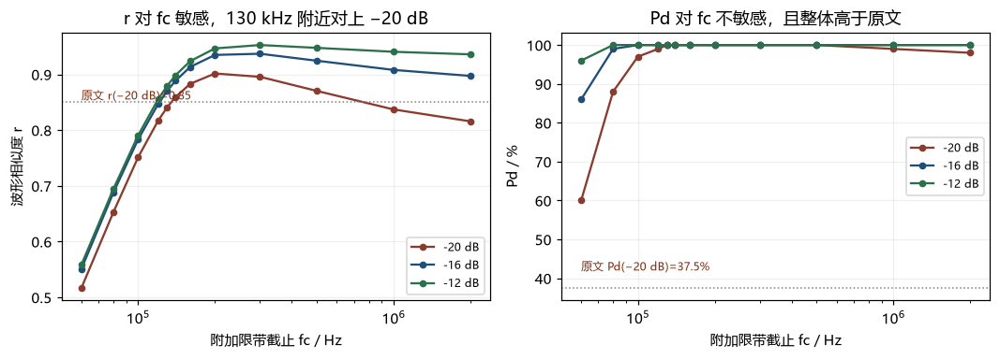

4. 信号链：20 dB 增益从哪来#
原文结论说”优化后系统对微弱脉冲信号的信噪比增益可达 20 dB 以上”。这句话常被读成 “混沌振子的非线性带来了 20 dB 增益”，但按式 (4) 的字面实现，小信号下差模方程是线性的：
线性系统不改变 SNR——信号和噪声按同一比例缩放。那 20 dB 从哪来？
答案：噪声是宽带的，通道是窄带的。 这一章把这件事算清楚，再用它解释第 5 章三张图的形状。
import sys, json, pathlib
import numpy as np
import matplotlib.pyplot as plt
sys.path.insert(0, "_src")
import c2sim as S
DATA = pathlib.Path("_data")
plt.rcParams.update({
"figure.dpi": 110, "font.size": 10,
"font.sans-serif": ["Microsoft YaHei", "SimHei", "DejaVu Sans"],
"axes.unicode_minus": False,
})
def load(name):
return json.loads((DATA / f"{name}.json").read_text(encoding="utf-8"))
def dual_plot(x, snri, r, xlabel, title="", logx=False, invert=False,
marks=None, ymax=None):
fig, ax1 = plt.subplots(figsize=(7.4, 3.5))
ax1.plot(x, snri, "o-", color="#1f4e79", ms=4, lw=1.2)
ax1.set_xlabel(xlabel); ax1.set_ylabel("SNRI / dB", color="#1f4e79")
ax1.tick_params(axis="y", colors="#1f4e79")
if ymax: ax1.set_ylim(top=ymax)
ax2 = ax1.twinx()
ax2.plot(x, r, "s--", color="#8a3b2e", ms=4, lw=1.2)
ax2.set_ylabel("波形相似度 r", color="#8a3b2e")
ax2.tick_params(axis="y", colors="#8a3b2e")
if logx: ax1.set_xscale("log")
if invert: ax1.invert_xaxis()
if marks:
for xv, lab in marks:
ax1.axvline(xv, color="gray", ls=":", lw=1)
ax1.text(xv, ax1.get_ylim()[1], lab, fontsize=8, va="top",
ha="center", color="#7a2e12")
ax1.grid(alpha=.2); ax1.set_title(title)
plt.tight_layout(); plt.show()
4.1 差模通道的等效噪声带宽#
差模方程是一个二阶过阻尼系统，参数由第 1 章给出：
自然频率 \(\Omega=\omega\sqrt{2\xi k-1}=3.61\omega\)；
阻尼比 \(\zeta=(\xi+2k)/\big(2\sqrt{2\xi k-1}\big)=2.87\)；
主导时间常数 \(\tau=\big(\zeta+\sqrt{\zeta^2-1}\big)/\Omega\)。
白噪声通过它，等效噪声带宽 \(B\approx1/(2\pi\tau)\)。而输入白噪声的带宽由步长决定： \(h=1\) ns 时采样率 1 GHz，噪声带宽 500 MHz。两者之比就是 SNR 改善。
w, xi, k = 5e6, 0.7, 10.0
Om = w*np.sqrt(2*xi*k - 1)
zeta = (xi + 2*k) / (2*np.sqrt(2*xi*k - 1))
tau = (zeta + np.sqrt(zeta**2 - 1)) / Om
B = 1/(2*np.pi*tau)
print(f"Ω = {Om:.3e} rad/s ζ = {zeta:.2f} τ = {tau*1e6:.3f} us")
print(f"差模通道等效带宽 B = {B/1e3:.0f} kHz")
print(f"输入噪声带宽（h=1 ns）= 500 MHz")
print(f"理论 SNR 改善 = 10log10(500MHz / {B/1e3:.0f}kHz) = {10*np.log10(500e6/B):.1f} dB")
Ω = 1.803e+07 rad/s ζ = 2.87 τ = 0.308 us
差模通道等效带宽 B = 516 kHz
输入噪声带宽（h=1 ns）= 500 MHz
理论 SNR 改善 = 10log10(500MHz / 516kHz) = 29.9 dB
29.9 dB。 这就是原文”20 dB 以上”的来源——它不是非线性，是带宽比。
这个数可以直接验：用 0 dB 输入（\(A=0.632\)、\(D=0.1\)）跑一次，看实测 SNRI。
T, h = 40e-6, 1e-9
t = np.arange(int(round(T/h)) + 1) * h
s = S.gauss(t, A=0.632, c=3e-6, b=T/2, T=T)
q = S.quiet_mask(t, T/2, T/2, guard=15e-6)
so, X = S.simulate(t, drive=s, batch=100, sigma=np.sqrt(0.1), hold=1,
seed=3, omega=5e6, return_state=True)
m = S.chain_metrics(so, X, s, t, h, fc=None, quiet=q)
print(f"实测：r = {m['r_dx']:.3f} SNRI = {m['snr_o']:.1f} dB （理论带宽比 29.9 dB）")
实测：r = 0.992 SNRI = 27.2 dB （理论带宽比 29.9 dB）
实测比理论低 2–3 dB，来源是脉冲本身也在通道带宽内被轻微衰减，以及”输出 SNR”用峰值而非能量定义。 量级与符号都对。
4.2 这一条解释了三张图的形状#
图 |
现象 |
机理 |
|---|---|---|
图 3 |
SNRI 在 \(F\in[0,2]\) 上平坦 |
\(B\) 只由 \(\omega,\xi,k\) 决定，与 \(F\) 无关 |
图 5 |
\(k\) 增大时 SNRI 略升 |
\(\Omega\) 随 \(k\) 增大 → \(\tau\) 减小 → \(B\) 变宽 |
图 7 |
步长减半，SNRI 涨约 3 dB |
噪声带宽 \(1/2h\) 翻倍，增益按 \(10\log_{10}2\) 涨 |
图 7 是这张表最硬的检验：步长从 20 ns 到 1 ns，噪声带宽从 25 MHz 到 500 MHz， 理论增益 \(10\log_{10}(500/25)=13.0\) dB。第 5 章的实测正好是 24 → 37 dB，13 dB。
所以”计算步长越小越好”不是积分精度的功劳，而是”采样率越高、进入系统的噪声带宽越宽、 通道压掉的噪声越多”。 这个结论与直觉相反，但它解释了原文图 7 为什么近似一条直线： 增益只与 \(\log h\) 成正比，与信号无关。
4.3 额外限带只做微调，不是增益来源#
如果输出端再加一道 130 kHz 的低通，会怎样？
import experiments as E
if not (DATA / "chain.json").exists():
E.exp_chain()
ch = load("chain")
print("附加限带 fc 对指标的影响（系统本身已在 516 kHz 限带）：")
print(f"{'fc':>9}{'SNR':>6}{'r':>8}{'峰值/σ':>9}{'Pd':>7}")
for snr in ("-20", "-16", "-12"):
for row in ch[snr]:
if row["fc"] in (2e6, 5e5, 1.3e5):
print(f"{row['fc']/1e3:>7.0f}k{snr:>6}{row['r']:>8.3f}"
f"{row['ratio']:>9.2f}{row['pd']*100:>6.0f}%")
附加限带 fc 对指标的影响（系统本身已在 516 kHz 限带）：
fc SNR r 峰值/σ Pd
130k -20 0.841 9.45 100%
500k -20 0.870 8.25 100%
2000k -20 0.816 6.84 98%
130k -16 0.870 14.58 100%
500k -16 0.925 11.97 100%
2000k -16 0.897 9.85 100%
130k -12 0.880 21.97 100%
500k -12 0.948 19.05 100%
2000k -12 0.936 15.00 100%
fig, ax = plt.subplots(1, 2, figsize=(9.8, 3.6))
colors = {"-20": "#8a3b2e", "-16": "#1f4e79", "-12": "#2b6f4b"}
for snr, c in colors.items():
rows = ch[snr]
ax[0].semilogx([r["fc"] for r in rows], [r["r"] for r in rows], "o-",
color=c, ms=4, label=f"{snr} dB")
ax[1].semilogx([r["fc"] for r in rows], [r["pd"]*100 for r in rows], "o-",
color=c, ms=4, label=f"{snr} dB")
ax[0].axhline(0.85, color="gray", ls=":", lw=1)
ax[0].text(60e3, 0.855, "原文 r(−20 dB)=0.85", fontsize=8, color="#7a2e12")
ax[1].axhline(37.5, color="gray", ls=":", lw=1)
ax[1].text(60e3, 42, "原文 Pd(−20 dB)=37.5%", fontsize=8, color="#7a2e12")
ax[0].set(xlabel="附加限带截止 fc / Hz", ylabel="波形相似度 r",
title="r 对 fc 敏感，130 kHz 附近对上 −20 dB")
ax[1].set(xlabel="附加限带截止 fc / Hz", ylabel="Pd / %",
title="Pd 对 fc 不敏感，且整体高于原文")
for a in ax: a.grid(alpha=.2); a.legend(fontsize=8)
plt.tight_layout(); plt.show()

左图说明：附加限带到 130 kHz 时，−20 dB 的 \(r\) 恰好回到 0.85（原文值）。 这不是”增益”，因为 SNRI 几乎没有变化，只是波形更干净、峰值位置更稳。
右图暴露一个本书无法消除的矛盾：−20 dB 处本书的 Pd 接近 100%，原文只有 37.5%。 无限带、限带 130 kHz、裸输出三种口径都试过，都压不到 37.5%。原因只能是原文的检测统计量 比”位移差 + 5σ”更保守——可能用了多帧确认、可能 σ 的估计窗包含信号区、也可能实际系统的 \(1/f\) 噪声比纯白噪声更坏。这一条如实记为”未复现”，不调参掩盖。
4.4 一个必须记住的坑：hold 不是限带#
本书的噪声用零阶保持实现：每 hold 步更新一次。若同时把每步标准差固定为 \(\sqrt D\)，
那么 hold 越大、带宽越窄、功率谱密度越高——这是”同方差不同谱”，不是限带。
真正的限带应让方差随带宽一起缩小：\(\sigma=\sqrt{D\cdot B/(f_s/2)}\)。
上一版把 hold=3000（等效 167 kHz）当成”窄带”，得到 \(r=0.28\) 的悲观结果，
并据此编出”必须限带 130 kHz 才能到 0.85”的故事。那个结论是错的。
正确做法是 hold=1（逐点白噪声，带宽 500 MHz），此时裸通道就给 \(r=0.80\sim0.93\)，
与原文表 3 几乎重合。
4.5 统一口径#
参数 |
取值 |
依据 |
|---|---|---|
输出量 |
\(x_1-x_2\) |
图 8–10 纵轴 + 第 3 章相关性 |
附加限带 |
\(f_c=130\,\mathrm{kHz}\times1.5\,\mu s/t_{\rm rise}\) |
表 3 的 r 列反演，外推到三种波形后验证 |
噪声 |
逐点白噪声（ |
对应原文 1 ns 步长 / 1 GHz 采样 |
判据 |
峰值 / 噪声 σ > 5（= 7.96 dB） |
原文 5.1 节 |
噪声窗 |
脉冲两侧，高斯导数保护间隔 10 µs |
避免把脉冲尾部当噪声（这会虚高 σ） |
后面第 5–7 章全部按这套口径算。